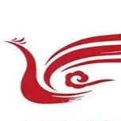
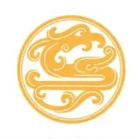

01 光环褪去
成为飞行养成生，是学子逐梦蓝天最现实的起点。
飞行养成生 飞行养成生模式是中国民航飞行员培养体系中的一种主流模式，特指从高中应届毕业生中选拔学员，通过'学历教育+飞行技能培训'一体化培养成为民航飞行员的方式。 在中国的数量已经超过5万，是中国民航业超过80%的现役飞行员来源。
这是人生的铁饭碗。
在成为飞行学员之前，林飞已经历困难重重的筛选流程，高于90%的淘汰率使这份铁饭碗更为来之不易。
飞行学员 - 林飞
我当时觉得学飞就是一门不会被淘汰掉的手艺......而且高中同学也都觉得能够成为飞行员是一件荣誉的事情。在我们那个小县城，传出去不说和清华北大比吧，怎么着人家也觉得相当于考了个985。
对于林飞来说，成为养成生意味着未来能够有一份稳定的工作；而对于签约的航空公司而言，许多像林飞这样通过严苛选拔的学员进入飞行养成生计划，能够保障航司在数年后获得稳定的飞行员来源。
在民航业蓬勃发展的黄金年代（2010-2019），航司纷纷给出"养成生返岗月薪超5万"的承诺，用白纸黑字的合同竞逐未来飞行员；而在养成生心中，这条契约划定的道路，亦是一份荣耀保障。
林飞与航司签订的合同中规定，如果相关训练与考试全部通过，他就能在完成训练后回到公司成为一名职业民航飞行员。对于兢兢业业参加着各种训练任务，顺利通过课业考核并完成私照、商照、英语考试以及理论考试的林飞来说，他的未来理应是一片坦途。
七年过去，林飞成为了一名网约车司机。
在他的网约车出发前，林飞下车围绕着汽车走了一圈以确保车况一切正常，"去年开小飞机的时候，上机前总是为了安全会绕着飞机走好几圈检查一下，习惯了。"
我父母都是工人，能供我读完大学不容易......没想到读完飞行员我最后只得到一个高中文凭。
跟与他同届的几百名飞行养成生一样，林飞被停飞了。
所谓"停飞"，本身是针对飞行养成生的一种筛选手段。从理论考试到飞行考核，养成生们必须通过层层考核标准的挑战，而被淘汰者就会面临停飞，无缘进入航司担任飞行员。
正常情况下停飞率在10%到15%左右，有的人是学业不够刻苦，有的人是身体查出来不适合飞，也有很多是在实机训练的时候淘汰。
常规停飞原因
然而林飞的停飞，和这些都没有关系。
02 人生迫降
2024年11月，林飞接到来自瑞丽航空的停飞通知。通知上赫然写到，"在返回航司面试中不合格"，航司认为林飞的入职主观意愿不够强，故并不同意其返回公司入职，并将他的飞行执照扣存。
林飞回忆，在临时安排的面试当天，几个考官几乎没有问什么疑难问题。本以为这个没有太多难度的面试就是走个过场，但在一纸停飞说明下来之后，他才意识到事情的不对。
与此同时，由于林飞的情况被瑞丽航空判断为学员主观原因导致的停飞淘汰，航司将他的飞行执照留在了公司，除非林飞愿意赔偿70万的学飞培训费，否则他无法拿回自己的飞行执照，也不能在别的航司寻找其他工作。
本来这个钱是航校垫付，应该是入职之后公司来出，但是公司没有钱了，只能扣下驾照让我们出这七十万，不然就不放人去自己找工作。
被莫须有原因停飞的养成生，在疫情后格外的多，林飞同届就有超200人。"我们的停飞率和疫情前相比几乎翻了个倍，能够到达20%以上。"
航空公司负担不起这么多飞行员了，因此最简单的方法就是停飞养成生，以此减少飞行员数量的增长。用现在互联网大厂的话讲，这就是航司在降本增效，总有人会被优化。
东方航空养成生 - 云生
同样在2024年10月，东方航空公司的养成生云生收到了停飞通知，理由是未能在规定期限内通过 ICAO英语考试。
2024年2月，东方航空发布通知，要求18至21级的飞行养成生必须在商业飞行执照（以下简称商照）取得后的6个月内通过ICAO考试。云生取得商照的时间是在6月，并于10月考完了ICAO，在11月成功获得了通过的成绩，这一切都在规定的期限内完成。但东航还是因为六个月的期限已到的原因将他停飞了。
我6月份才正式拿到商照。但是最后被停飞的时候说要从3月通知发出时开始算到9月，不是从6月开始算。这个事情最终解释权确实在航司手里。我们同一批完成训练的养成生都收到这个通知，已经有超过100人都被这个通知停飞。
以前，毕业回公司之后再通过ICAO考试的也大有人在，几乎没人被这个考试卡掉过。
因为提前结束的考试期限而被停飞之后，云生觉得无比的冤枉。"如果我们确实通过考试晚了，那么我心甘情愿，但是现在我们是因为规则突然变动才被停飞的，那没有一点公平可言"
一道“算术题”引发的停飞
自入校以来，云生就一直在努力学习并顺利完成了实机训练。但冰冷的停飞通知却告诉他，所有的努力都是徒劳无功。
所有被停飞的学员都在努力考试，但是谁知道通过了考试命运也不由自己决定。
我现在在家里都不好发语音聊这个事，我不想再让我爸妈听到这个事情了。
民航副驾驶 & 公众号主笔 - 高杰
云生这样的故事，民航副驾驶高杰，已经听过数十次了。随着养成生困境越发普遍，高杰开始在自己的微信公众号上写作，类似的报道他已写下数十篇。
你们能相信在2024年了，训练打人和随意停飞，依然在某些航校和航司是普遍现象吗？
有的航校要整顿，把学生按指标停掉，就是最快出成绩和给上头交代的方式。有的学生检查之前，就看到基地经理直接在办公室指派检查员，明天这个人你来'杀'。
有学生和一个大关系户分到一个组，这种就很绝望，关系户停不掉那只能停你嘛，眼睁睁看着卷铺盖走掉。
学生因为考位紧张的缘故想申请考试延期,但是一申报上去就会被踢皮球,学校没有部门直接管理这件事。
比惨没有止境。
不止一家航司的困境
奥凯航空
截至2025年2月，奥凯航空有一百多名飞行养成生无法入职，公司口头通知部分学员自费80万元转向别的航司。无法入职的养成生只能从事卖保险、卖房子、卖黄焖鸡等工作。
昆明航空
2021年，有毕业生在昆明航空入职受阻，补助被取消，有人被拖到三十岁仍未入职。公司领导开会时笑着宣称让待飞学员"好好安排一下自己以后该做什么"。
吉祥航空
2025年2月，吉祥航空将本应去年入职的学员扣在公司自习，后要求签转地服合同。不签就主动停飞赔违约金，签了则面临长时间劳作和低薪。
一纸轻飘飘的停飞证明，对于养成生来说却是重若千斤的烙印。
面对航司或是拖延入职、或是巧立名目停飞的重重障碍，养成生们在航司的决定面前却全然没有话语权。当初一笔一画订下的明文合同，现如今却成了令其身陷囹圄的紧箍。
"哪有话语权啊，你不飞有的是人飞。"
对于早早签下合约，被合同"买断终身"的养成生们来说，通往长安的道路只有一条。在这条唯一的道路上，许多人已经卷得头破血流。而困境的源头，是曾经的疫情和疫情后艰难复苏的航空业。
03 高压滞留
新冠疫情，这个离我们似乎已有些遥远的名词，对全国超5万的飞行养成生来说却代表着一段影响至今都难以消除的经历。
与普通的大学生能够进行线上课程学习不同，对于需要进行实地学飞的养成生来说，20年到22年的疫情，意味着满足完成商照学习所需要的300小时实机训练被大幅期延后，原本四年能学完的飞行课程，在巨大的不确定性中被无限延长。
"疫情的时候去了我们这个专业，你飞个五年六年，那都是正常的，正常的话能四年飞完的那很少。"
在历经在超出寻常的学飞时间之后，与养成生们迎头撞上的是民航业发展受挫，航司营收严重下滑的行业处境。在航班班次大幅下滑、公司陷入亏损危机的背景之下，"公司不要那么多人了"的尴尬处境为本就超时学习的养成生们雪上加霜。
刘空表示，从14级到19级都有养成生陷入被公司拒绝入职的窘境，在中飞院就读的养成生还有机会参加中飞院介入下航司安排的面试，其他小航校的学员们则直接被抛弃。
"经过疫情的冲击以后，三大行还有能力去对抗这种风险，那小公司的话就没办法，扛不住这些风险，不得不清退养成生。"
在民航业蓬勃发展的黄金年代,航校与公司不论招收多少养成生,都能够随着高歌猛进的行业发展而顺利吸纳入职。疫情的骤然降临,却使从航校招生到航司消化的职业链条被彻底打破了。
黄金十年与骤然冷却的"剪刀差"
行业营收 vs 飞行员数量
旅客运输量 vs 航校招飞数
行业营收与航线数量下滑的同时，养成生招生数却仍然维持疫情前的高位。"但是一旦航司消化不动了，没人接盘了，那就惨了。"高杰如是说，"当时难道没有人发现这个系统性风险吗？当然有，但是市场乐观的情绪，高歌猛进习惯了,毕竟这么多年都缺飞行员，航空公司即使觉得有一天会不缺，那一天也必然在很久之后。"
在如此过剩的招生下，畸形的停飞筛选才成为了航司降本增效的优选方式，也成为了飞行养成生的梦魇。
行业的复苏也许可以等待，但飞行学员的心理健康却关系着未来的航空安全。即使没有被停飞，停飞考验的阴影下，养成生的心理安全正在成为问题。
在中国民航飞行学院薛瑞的《民航飞行学员心理应激、心理韧性与安全行为关系的研究》论文中写到：飞行员作为航空器的直接操控者,在长期的飞行环境中面对各种挑战,而飞行学员作为未来民航飞行员的主要来源,其心理状态直接影响飞行操作的安全性和决策质量。
失控的驾驶舱：被忽视的心理健康
根据空难数据统计网站planecrashinfo的数据,超过50%的空难来自驾驶员状态问题,从上世纪80年代到21世纪10年代,由于驾驶员状态和失误导致的空难占比更是逐年上升。
精神疲劳
埃塞俄比亚航空409号航班，飞行员精神疲劳致控制输入不一致，失事坠毁致90人遇难。
重度抑郁
德国之翼航空9525号航班，副驾驶抑郁心理导致驾机自杀，撞山坠毁致150人遇难。
情绪失控
东海航空DZ6297航班，飞行员情绪失控与空乘互殴，严重危及飞行安全。
注意力分配不当
美国东方航空401号航班，飞行员注意力分配不恰当，未关注飞行高度致101人遇难。
在由业内学者黄步庭撰写的《民航飞行大学生各阶段心理压力水平测量与应对建议》一文中,停飞为飞行学员带来的压力超过课业压力,考试压力等等因素,属于主要压力来源之一。
停飞就像那把达摩克利斯之剑,盘旋在每一个飞行学员头顶,不论是否落下,都让人压抑窒息。
压力的来源：无处不在的达摩克利斯之剑
数据来源:《民航飞行学员心理应激、心理韧性与安全行为关系的研究》
我们入学前都经过心理筛查，但是训练这么几年之后没有谁不是整天忧愁的。
如果你去报告自己的心理问题，别说帮你了，很可能就因此把你停飞，所以没人敢说。
也许行业恢复了，停飞政策也明晰了，未来的养成生还能有些希望。
04 行路难寻
另一重严峻的现实是，由于专业特殊、专一性强和学历问题，在航空业之外，一份航校毕业的文凭更难以被社会所认可。在与蓝天告别、被迫迈出航校的大门后，等待他们的只有送外卖、跑网约车等学历要求较低的工作。昔日驾驶舱中复杂的仪表显示与操纵杆，变成了小电驴上的电量和网约车的手刹。
出路在哪里？
寒冬与复苏
养成生们面临的困境，是整个民航业在疫情期间遭遇重创的缩影。下图直观地展示了民航业在过去几年经历的财务“过山车”。连续三年的巨额亏损是航司“降本增效”、收紧招聘的直接原因。然而，隧道尽头终有光亮。2023年行业利润的回正，标志着最困难的时期已经过去，为后续的改革与调整创造了必要条件。
数据来源：中国民航局
改变正在发生
养成生们寻找出路的同时，行业的复苏和培养体系的优化正在发生。2025年1月召开的全国民航工作会议披露，2024年全行业同比减亏206亿元，总体实现扭亏为盈。疫情冲击为民航业带来的影响，正随着航线的恢复与运输量的增长慢慢消弭。
航校与航司内，新的淘汰制度也在逐步建成。长期以来，飞行学员的停飞决策主要依赖于飞行教员或检查员对其操作过程的主观判断。然而，由于不同教员对训练大纲和评估标准的理解存在差异，这种评估方式往往难以保证结果的客观性和稳定性。
为改变这一状况，中国民航局在《关于全面深化运输航空公司飞行训练改革指导意见》中明确提出，要树立"基于核心胜任能力实施飞行训练"的新理念，并推行"大数据+飞行训练"战略，强调通过科学分析学员的运行数据和训练表现，在有限的训练时间内实现个性化、精准化的训练评估，从而提升飞行人才培养的效率和科学性。
基于胜任能力(CBTA)的训练体系
中国民用航空飞行学院率先对该政策落地进行试点，与空客公司合作开发了基于胜任能力（CBTA）的初始飞行训练体系，进一步推进淘汰制度的量化。
技术性胜任力 (4项)
非技术性胜任力 (5项)
知识运用 (KNO)
理论知识的正确应用，航空气象、法规等。
程序运用 (APK)
标准操作程序（SOP）的执行准确性。
人工航径管理 (FPM)
飞机操纵的精准度（如姿态、航向、高度控制）。
自动化航径管理 (FPA)
自动驾驶系统的合理使用与监控。
沟通 (COM)
机组间信息传递的清晰度与及时性。
领导力与团队合作 (LTW)
驾驶舱资源管理（CRM）表现。
情景意识 (SAW)
对飞行环境、风险的动态感知能力。
工作负荷管理 (WLM)
任务优先级划分与压力应对。
问题解决与决策 (PSD)
特情处置的合理性与效率。
中飞院在遂宁分院的试点数据表明，采用CBTA后，训练效率显著提升20%，训练中人为因素导致的不安全事件发生率下降了35%。
航司的停飞细则也在一步步完善，2025年东航新发布的关于ICAO考试的文件中将停飞日期进行精确计算，而不是简单的"六个月内通过"的说法。
"各种停飞的新规已经磨合好了，这一批是突然改了游戏规则被停，下一批如果做好宣讲，至少能保证不出现莫须有的停飞。"
另一条跑道：低空经济
离开民航的铁饭碗，低空经济也可以成为一条出路。中国航空学会发布的2024年低空经济场景白皮书的数据显示，除飞行员培训外通用航空仍然有上百个未来应用场景。对于被停飞的学员来说，拥有通用航空飞行经历意味着转向其他应用场景的门槛更低。
2024通用航空应用场景
数据来源：2024低空经济场景白皮书
与此同时，对于养成生来说，即使现在无法在低空经济领域找到心仪的工作，但是发展中民用无人机行业在未来也能够帮助缓解转型困难。
民用无人机运营单位分布(截至2024年底)
数据来源：2024年民航行业发展统计公报
截至2024年底，获得无人机运营合格证的单位共19,979家。
但对于已经被停飞的养成生来说，停飞留下的伤痕早已难以愈合。
云生
云生最终来到一个通航机场实习，繁重的工作让他时常面临加班到深夜，在他有空余时间坐下来讲述自己维权经历的时候，微信绿色语音条上的时间已经显示十一点半了。
林飞
林飞还在等待能够重新入职公司的消息，尽管在网约车上日夜奔波中补贴家用，在公司发消息过来说有机会参加快递公司飞行员入职面试的时候，他还是尽可能不错过任何一次机会。
刘空
刘空在无法入职的两年后参加了其他航司面试，目前他已入职新的航空公司，担任副驾驶的职位。
"我还是想飞的，如果能重新选择，我还是想当一名飞行员。"
所有人都在等待明天。